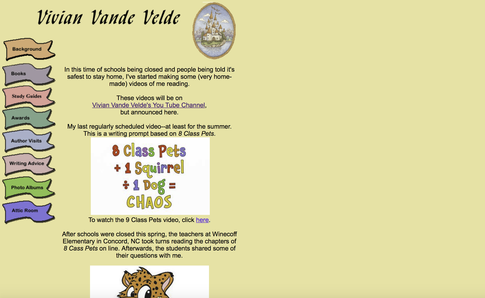
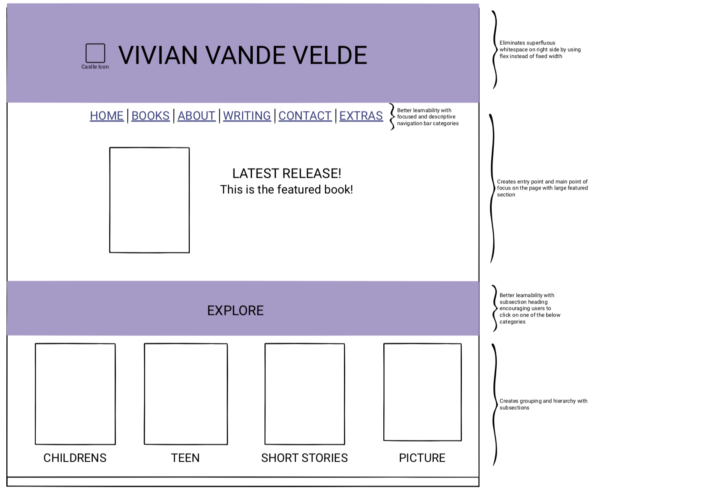
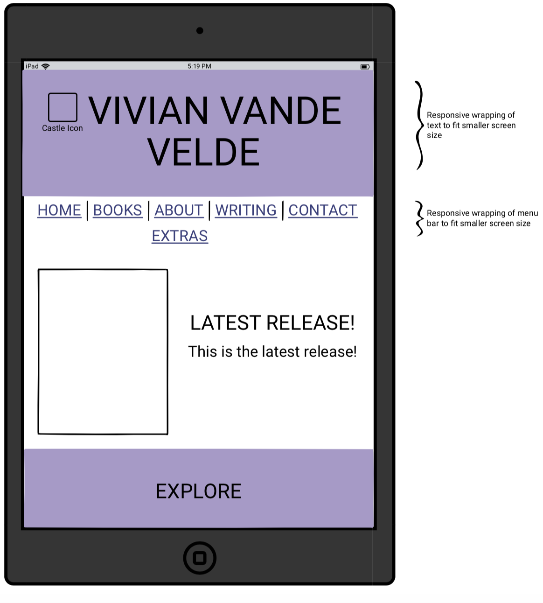
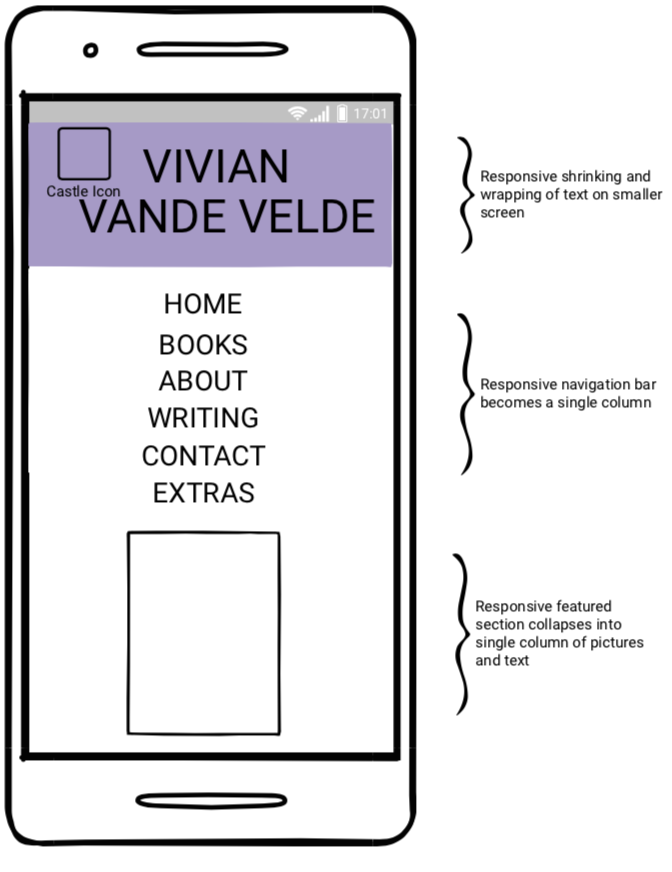
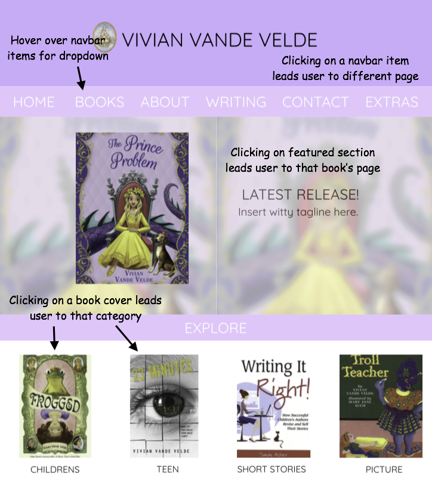
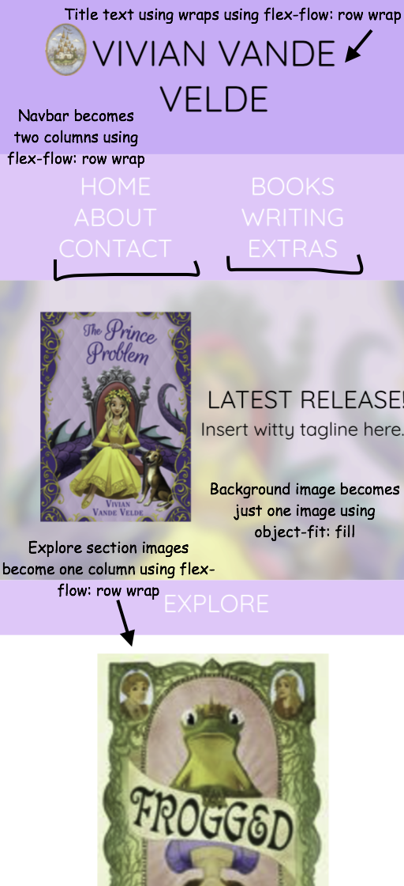
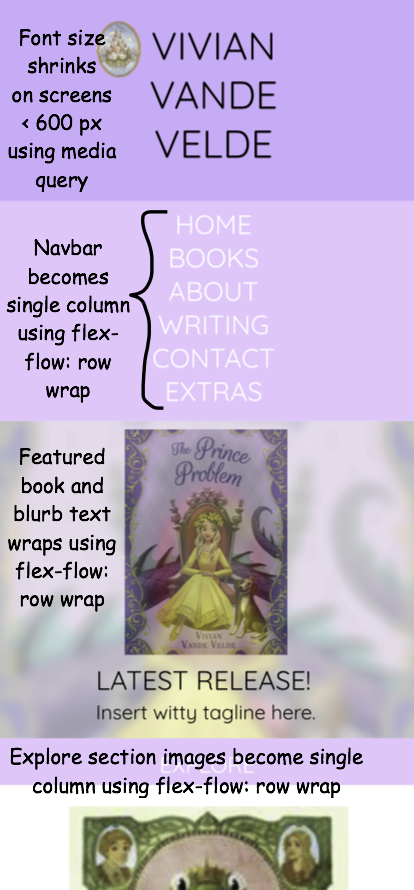
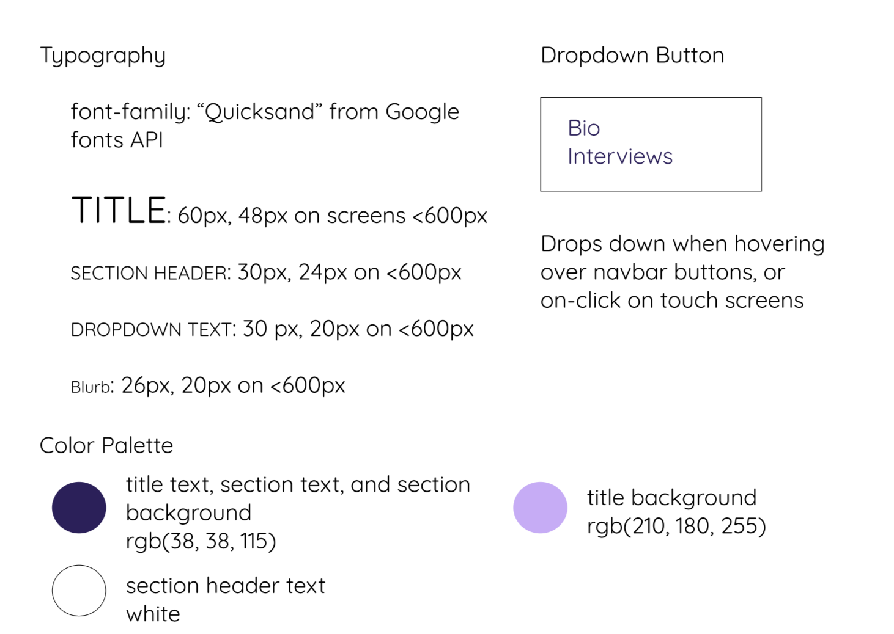
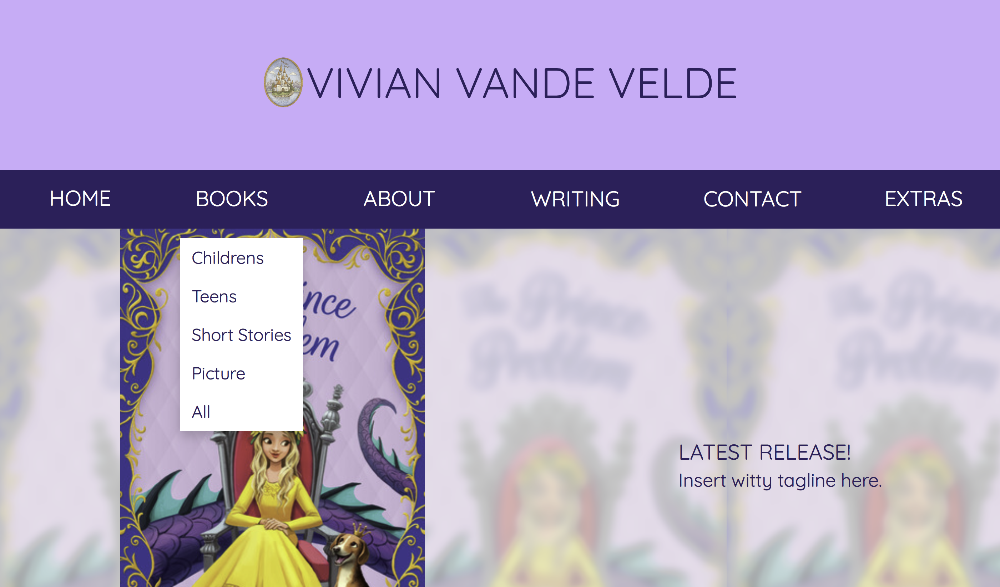

Responsive web design is an approach to web-based user interaces where
pages will render differently on different screen sizes.
The goal of this project was to choose a webpage, identify its usability and accessibility problems, and create a responsive redesign of it through lo-fi and hi-fi prototyping and visual design.
For this project, I chose the homepage of author
Vivian Vande Velde's website.

On this page, I identified several visual design problems:
- Unresponsive layout
- Content doesn't wrap when screen width shrinks
- Larger screens have leftover space on the right due to fixed content width
- Poor color choice
- Variation of colors for navigation bar categories create lack of cohesion
- No grouping or hierarchy
- All content is put together on one long, scrollable page without subsections, making information unorganized and hard to find
- Low learnability
- No main point of focus on homepage is disorienting for users
- No subcategories in navigation bar makes topics hard to find
- "Attic room" is a confusing category name for users, as is the content contained in it (which is unrelated to attics, room, or each other)
Additionally, when I ran the WAVE evaluation tool to test the site's accessibility, it returned 9 errors, 24 alerts, 2 contrast errors, and 1 structural element. While most of the alerts for the text of a link not being descriptive enough probably would not cause accessibility issues, since they were generally given in the context of "to see this interview, click here," the errors and alerts for very small text, language missing or invalid, very low contrast and no page regions could. When I ran a screen reader on the site, this lack of page regions resulted in VoiceOver not being able to navigate and differentiate between elements, instead grouping all the content together.
I created my lo-fi mock-ups using Balsamiq. Here, I tried to plan a layout that has groupings and hierarchy through its sections, subsections, and different sizes of text. I also chose more descriptive category names for the navigation bar to help with learnability and fixed the original site's layout issue of having too much blank space on the right.



I created my hi-fi wireframes using Figma. Here, I explanded on the layout of my lo-fi mock-ups and specified how my site would be responsive to different screen sizes using flexbox. I also used a more cohesive color palette than the original site's, chosen to match the cover of the current featured book.



I created my visual style guide using Figma. Here, I specified what typography and color palette I wanted to use, as well as the design of my interactive dropdown button. After testing my hi-fi prototype using WAVE, I also changed the navbar color to create a greater contrast with the text for better user accesibility.

Overall, my redesign aimed to fix the problems of layout, learnability, grouping/hierachy, and unresponsiveness that I identified in the original design.

See the finished product
here!